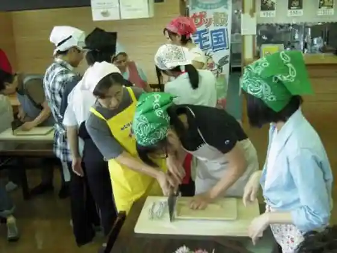
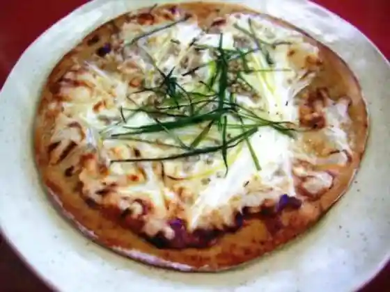
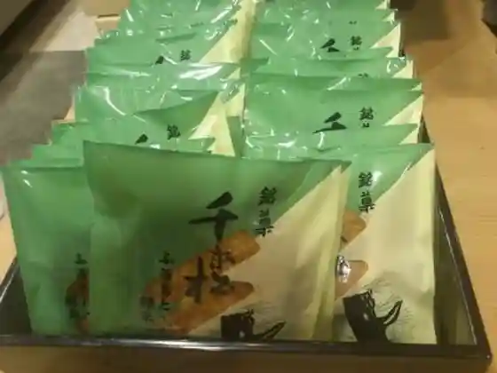
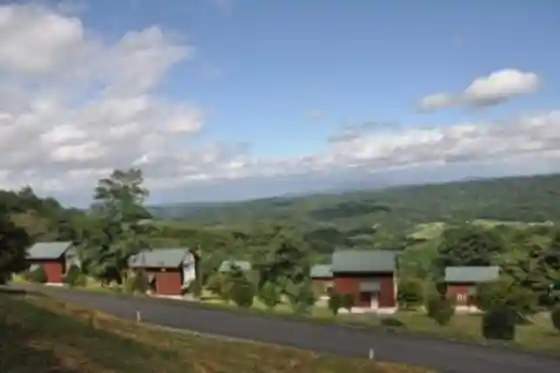

Miretto Park Teuchi Chi Soba
Karumai, Iwate · 0195-47-1452 · Official / source link

Nai Maru Ya
Karumai, Iwate · 0195-46-2318 · Official / source link

Meika Sembon Matsu
Karumai, Iwate · 0195-46-2528 · Official / source link

Miretto Park Campground
Karumai, Iwate · 0195-47-1452 · Official / source link

Nyu Karumai Kantorii Club
Karumai, Iwate · 0195-45-3331 · Official / source link
Dattan Soba
Karumai, Iwate · 0195-46-2318 · Official / source link
Karumai Bussan Koryu Kan
Karumai, Iwate · 0195-46-4222 · Official / source link
Dattan Soba Zakkoku Kanmen
Karumai, Iwate · 0195-46-2301 · Official / source link
Soba Geppei
Karumai, Iwate · 0195-46-2528 · Official / source link
Sarunashi
Karumai, Iwate · 0195-43-4666 · Official / source link
Sei Taka Dondon Market
Karumai, Iwate · 0195-46-3115 · Official / source link
Gokoku Hojo Ga Ki
Karumai, Iwate · 0195-46-2528 · Official / source link
Seikatsu Bunka Museum
Karumai, Iwate · 0195-46-4151 · Official / source link
Hatofuru Supotsu Land
Karumai, Iwate · 0195-46-3880 · Official / source link
Folk History Museum Rekishi to Minwa no Kan
Karumai, Iwate · 0195-46-4232 · Official / source link
Toku Raku Tera
Karumai, Iwate · 0195-46-2944 · Official / source link
Miru Miru Hausu
Karumai, Iwate · 0195-47-1030 · Official / source link
Yukitani Kawa Damuforisuto Park Karumai
Karumai, Iwate · 0195-45-2444 · Official / source link